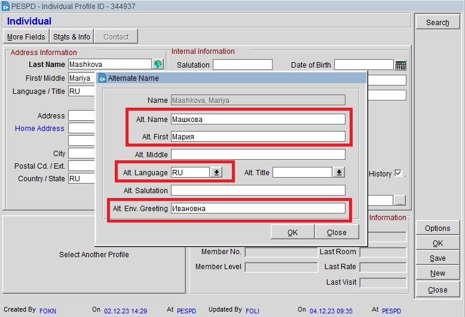
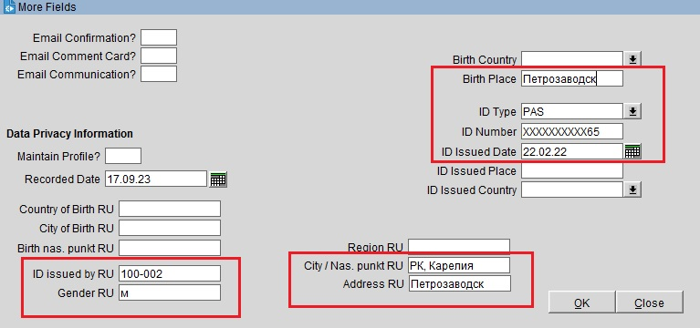

У гостей с Карельской пропиской, профиль гостя заполняем обязательно
Профиль гостя
Если гость уже заселялся ранее, нажимаем Options → Profile → Select Another Profile, вводим фамилию и имя гостя, ищем нужный профиль.
Если гость у нас не проживал или вы не можете найти его профиль, то заполняем данные самостоятельно. Нажав на копку рядом с Last Name, с изображением планеты, откроется окно Alternate Name, заполняем на кириллице графы Alt. Name, Alt. First, Alt. Language выставляем RU, заполняем отчество гостя в Alt. Env. Greeting.

Далее нажимаем на кнопку More Fields, которая находится над полем Last Name. В открывшемся окне, заполняем поля согласно документу гостя: ID Type выбираем PAS для паспорта или UNKNOWN для свидетельства о рождении, ID Number, ID Issued Date, ID Issued by RU, Gender RU, Birth Place, City / Nas. punkt RU/ Address RU

Также, заполнив полностью профиль гостя, при необходимости, можно распечатать Форму №5: Options → Register Card → Forma-5. Выглядит она следующим образом: